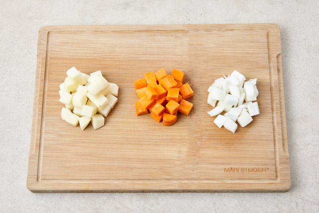
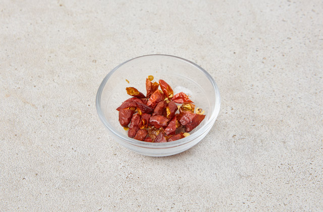
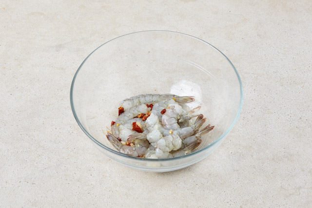
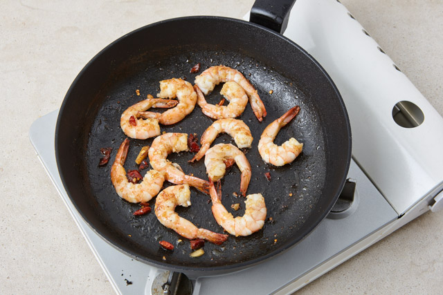
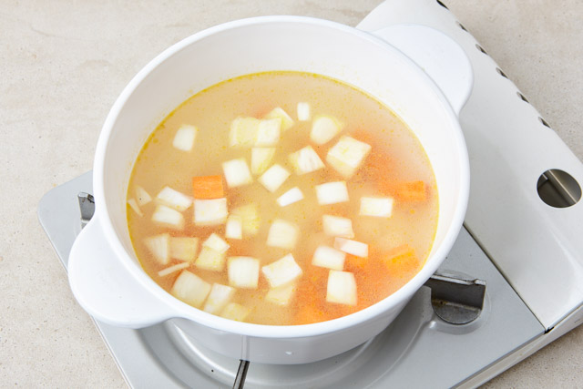
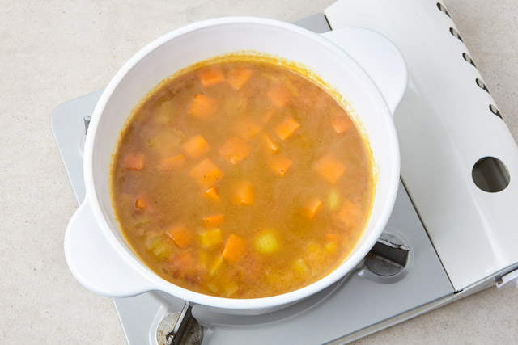
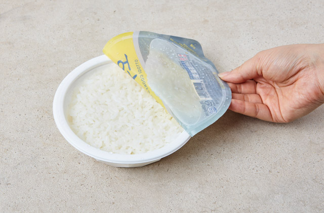
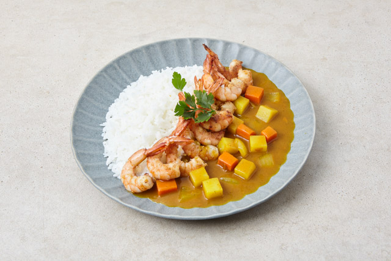
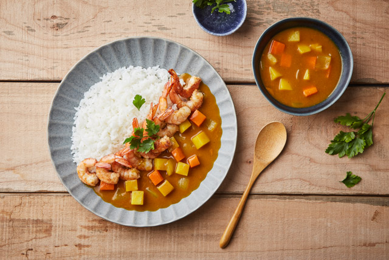

매콤 쉬림프 카레라이스
언제 먹어도 맛있는 카레를 더욱 맛있게 즐기는 방법을 소개해 드릴게요. 카레는 어떤 재료와도 잘 어울리지만, 특히 새우는 최고의 짝꿍 중에 하나이죠! 여기에 군침 도는 매콤한 맛을 위해 타바스코 스리라차 소스도 추가해봤어요. 새우와 카레에 매콤함까지 더한 환상의 궁합으로 오늘 식탁을 차려보는 것은 어때요?
만드는 방법
-

Step 1 감자와 당근, 양파는 1cm로 깍둑 썬다.
-

Step 2 페퍼론치노는 작게 부순다.
-

Step 3 새우는 껍질과 내장을 제거하고 미향, 다진마늘, 소금, 후추, 부순 페퍼론치노로 간을 한다.
-

Step 4 후라이팬에 약간의 올리브유를 두르고 새우를 굽는다.
-

Step 5 냄비에 올리브유를 두르고 감자, 당근, 양파를 볶다가 물을 부어 끓인다.
-

Step 6 끓기 시작하면 카레가루와 스리라차를 넣고 5분간 끓여 카레소스를 만든다.
-

Step 7 전자레인지로 오뚜기밥을 조리한다.
-

Step 8 밥을 그릇에 담고 카레소스를 부은 뒤 구운 새우를 올려 완성한다.
-

완성!
레시피 재료
-
- 필수 재료
오뚜기 바몬드카레 매운맛 골드 1봉, 오뚜기 순후추 1/2t, 맛있는 오뚜기밥 4개, 물 700ml, 새우 (중하) 8마리, 페퍼론치노 4개, 고춧가루 1T, 소금 1/2t, 오뚜기 타바스코 스리라차 1T, 오뚜기 프레스코 압착올리브유 1T,오뚜기 미향 1T, 다진마늘 1/2T
-
- 선택 재료
감자 1/2개, 양파 1/2개, 당근 1/4개